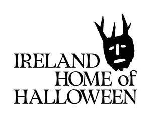

Trade Mark Journal No.2025/039 26 September 2025
UK00004262884 11 September 2025 (9,16,35,39,41,43)

- Class 9
- Interactive computer software that provides navigational and travel information; Electronic publications; Downloadable electronic publications; downloadable activity packs; E-books; Downloadable e-books; Downloadable electronic brochures; Interactive electronic publications; Media content; Audio recordings; Audio visual recordings; Mobile application software; Downloadable mobile applications; Downloadable media; Downloadable multimedia files; Educational media; Downloadable video files; Music recordings; Downloadable electronic publications in the nature of magazines, posters, pamphlets, leaflets, brochures, maps and newsletters; Downloadable media relating to tourism.
- Class 16
- Printed matter, and stationery and educational supplies; Advertising publications; Leaflets; Printed flyers; Printed publications; Printed periodicals; Printed newspapers; Printed posters; Printed travel books; Printed recipe books; Printed children’s activity books; Booklets; Newsletters; Magazines; News bulletins; travel guides; Visitors books; Printed matter; Travel magazines; Printed leaflets; Printed periodicals in the field of tourism; Travel guide books; Children’s books; Printed books; Children's activity books; Bags made of paper; Gift packaging; Gift wrapping paper; calendars, printed timetables, charts, brochures; graphic prints; headed notepaper; tourism brochures and guides; greeting cards; note books, writing pads; photographs and pictures; stationery; office requisites; coasters of paper; pens, pencils, pencil sharpeners, pencil and pen holders and writing materials; paper weights; tickets; paper placemats, cloths and napkins; postcards and posters; stencils, stickers and transfers.
- Class 35
- Business assistance, management and administrative services; Office functions; Collecting business statistics; Advertising, marketing and promotional services; Advertising services relating to the travel industries; Advertisement for others on the internet; Advertising and marketing services provided by means of social media; Marketing services in the field of travel; Digital marketing; Audio visual displays for advertising purposes (preparation or presentation of-); Business promotion services provided by audio/visual means; Promotional marketing; Promotion, advertising and marketing of on-line websites; Press office services; Media relations services; Publicity and advertising; Advertising in periodicals, brochures and newspapers; Development of promotional campaigns; Advertising in the field of tourism and travel; publicity and promotional services; Marketing, advertising, and promotional services; Distribution of advertising, marketing and promotional materials; Production of video recordings for advertising purposes; Distribution of publicity leaflets; Distribution of flyers, brochures, printed matter and samples for advertising purposes; Distribution of products for advertising purposes; Distribution of promotional matter; Distribution of publicity materials (flyers, prospectuses, brochures, samples, particularly for catalogue long distance sales) whether cross border or not; Arranging and conducting of commercial exhibitions and shows; Organisation of exhibitions and events for commercial or advertising purposes; Arranging and conducting of fairs and exhibitions for business and advertising purposes; Arranging and conducting of promotional events; Arranging and conducting of marketing events; Promotion of festivals; promotion of musical performances; promotion of performing arts entertainments. Retail and online retail services connected with the sale of stationery and stationery supplies, books, printed publications, leaflets, magazines, maps, fridge magnets, bags, clothing, hats, tote bags, mugs, confectionery, badges, notebooks, toys, tea towels, water bottles, plastic water bottles, reusable stainless steel water bottles, calendars, brochures, graphic prints, greeting cards, note books, writing pads, coasters, paper weights, postcards and posters, stencils, stickers and transfers; information, advisory and consultancy services relating to the aforesaid.
- Class 39
- Transportation information; Travel arrangement services; Agency services for arranging the transportation of persons; Coordinating travel arrangements for individuals and for groups; Arrangement of passenger transport; Arranging of travel by coach; Arranging of travel by bus; Arranging transport for travellers; Transport information, advice and reservation services; Rental services related to vehicles, transportation, and storage; Transport; Bus transportation services; Coach transportation services; Rail transport services; Itinerary planning services; Minibus transport services; Operating tours; Passenger coach services; Provision of tours; Tour operating; Transport of passengers by coach; Transport of passengers by bus; Transport of passengers by road; Travel organisation; Supplying tickets to enable holders to travel; Booking of tickets for travel; Travel ticket reservation services; Travel services; Travel information; Travel consultancy; Sightseeing services; Tour conducting; Provision of tourist travel information; tourist guide services; arranging excursions for tourists; the provision of travel information provided on line from a computer database; tourist office services; arranging of tours; arranging of transport and cruises; booking of seats for travel; travelling and transport reservations; escorting of travellers; arranging travel and information thereof, all provided on-line from a computer database; Information, advisory and consultancy services relating to the aforesaid.
- Class 41
- Arranging for ticket reservations for shows and other entertainment events; Ticket information services for entertainment events; Ticket reservation and booking services for recreational and leisure events; Ticket reservation and booking services for cultural events; Ticket reservation and booking services for entertainment events; Ticket reservation and booking services for sporting events; Ticketing and event booking services; Audio, film, video and television recording services; Production of educational sound and video recordings; Production of podcasts; Production of sound and music recordings; Arranging and conducting of commercial, trade and business conferences; Arranging and conducting of sports competitions; Education and training; Providing information about cultural activities; Provision of education and training; Entertainment; Organisation of events for cultural, entertainment and sporting purposes; Consultancy and information services relating to arranging, conducting and organisation of conferences; Providing information relating to recreational activities; Ticket reservation and booking services for education, entertainment and sports activities and events; Arranging of contests; Arranging of entertainment shows; Conducting guided tours; Festivals (organisation of-) for cultural purposes; Fetes (organisation of-) for cultural purposes; Providing cultural activities; Planning of shows; Special event planning; Workshops for cultural purposes; On-line publishing services; Multimedia publishing of electronic publications; Providing electronic publications [not downloadable]; Providing non-downloadable electronic publications; Provision of on-line electronic publications (not downloadable); Information about leisure activities; Information about entertainment and entertainment events provided via online networks and the Internet; Ticket procurement services for entertainment events; Publication of online guide books, travel maps, city directories and listings for use by travellers, not downloadable; Publication of directories relating to tourism; Publishing of books; Publication of directories relating to travel; Electronic online publication of periodicals and books; information, advisory and consultancy services relating to the aforesaid, including such services provided on-line from a computer database or the Internet.
- Class 43
- Information, advice and reservation services for the provision of food and drink; Consultancy provided by telephone call centers and hotlines in the field of temporary accommodation; Providing information about temporary accommodation via the internet; Providing on-line information relating to holiday accommodation reservations; Provision of information relating to the booking of accommodation; Provision of information relating to restaurants; Providing online information relating to hotel reservations; Appraisal of hotel accommodation; Rating holiday accommodation; Services for reserving holiday accommodation; Arranging of accommodation for tourists; Electronic information services relating to hotels; Booking agency services for hotel accommodation; Booking of temporary accommodation via the Internet; Reservation of tourist accommodation; Temporary accommodation; Services for providing food and drink; Food and drink catering; temporary bar, restaurant and catering services; catering services specialising in fairs, tastings and public events; provision of information relating to the preparation of food and drink; Tourist hostels; information, advisory and consultancy services relating to the aforesaid.
Tourism Ireland Company Limited by Guarantee
Representative: Stobbs